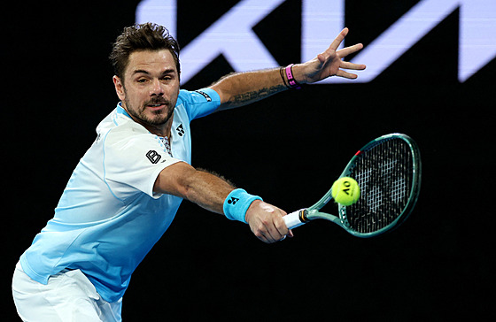

Napsala: Gita Hadašová
Datum: 6.5.2026
Tato emotivní událost se stane ústředním bodem turnaje Swiss Indoors Basel 2026, který spadá do kategorie ATP 500 a odehraje se na přelomu října a listopadu. Pořadatelé neskrývají nadšení a potvrzují, že start domácího veterána bude pro fanoušky největším lákadlem celého sportovního týdne. Organizátoři na sociálních sítích vzdali Wawrinkovi hold připomínkou jeho tří grandslamových titulů a neopakovatelného jednoručního bekhendu, který ho provázel celých 24 let v profesionální dráze. Zdůraznili, že Stan odevzdal tenisu maximum a Basilej, která stála na počátku jeho cesty, je logickým místem pro její uzavření. Hlavní oslava Wawrinkova odkazu proběhne v rámci pondělního programu „Super Monday“ 26. října v 18:00. Půjde o velkolepý ceremoniál, který skrze video medailonky a pocty připomene nejdůležitější okamžiky a nejcennější trofeje, které během let na okruhu ATP nasbíral. Fanoušci se však nemusí bát, že by šlo o pouhé formální sbohem u mikrofonu. Wawrinka má v plánu se do turnaje aktivně zapojit i jako hráč, takže diváci budou mít minimálně ještě jednu příležitost vidět ho v akci Letošní ročník v hale St. Jakobshalle tak získá díky loučení domácí hvězdy zcela jiný rozměr. Turnaj navíc v roce 2026 slaví půlkulaté 55. výročí svého založení, což z něj dělá jednu z nejvýznamnějších událostí ve švýcarském sportovním světě. Při pohledu zpět na Stanovu kariéru vyčnívá především jeho schopnost vyhrávat velké turnaje v nejsilnější éře tenisu. Bývalý třetí hráč světa si podmanil tři různé grandslamy (Melbourne 2014, Paříž 2015 a New York 2016) a celkem nastřádal 16 turnajových prvenství. Zapomenout nelze ani na jeho reprezentační úspěchy - olympijské zlato po boku Rogera Federera z Pekingu a klíčový podíl na zisku Davis Cupu v roce 2014.

Zdroj:https://www.idnes.cz/sport/trendy/wawrinka-ukonci-karieru-behem-domaciho-turnaje-na-programu-je-emotivni-rozlucka.A260505_124914_trendy_blah